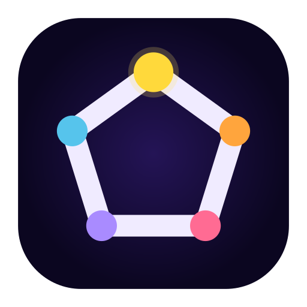

Auriga
Studio
編集
カラー
オーディオ
書き出し
ときくん
YMM4
DaVinci
Premiere
保存
書き出し
時
プログラムモニター
1920 × 1080 (16:9)
1080 × 1920 (9:16)
1080 × 1080 (1:1)
3840 × 2160 (4K)
00:00:00:00
/
00:00:10:00
⏮
◀|
▶
|▶
⏭
🔁
🔊
⤧
✂
✋
分割
削除
↶ 元に戻す
↷ やり直し
ズーム